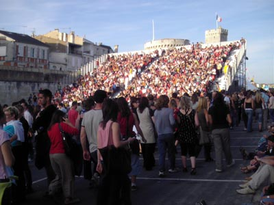

If you haven't been to La Rochelle yet this is one place well worth a visit. In fact it is not surprising that La Rochelle is the third most visited city in France (at the time of my visit), with more than three million visitors a year.
This charming seaport has everything to satisfy the holidaymaker. It combines history (one look at the Vieux Port at the waterfront with its turrets and mediaeval buildings will show you how steeped in history this city is) with modernity (you'll even be able to find shops selling state-of-the-art objects here). A walk along la rue du Palais is a must as it combines the best of both worlds - the ancient and the modern.
Yet the inhabitants still retain the fast-diminishing charm of the provincial people who still find time to talk to visitors and do not let the stress of modern living get the better of them.
Besides it is just a bridge away from the Island of Ré, the equally popular holiday destination for the French themselves. These two places are well worth a visit at any time of the year but particularly so in July or August to enjoy swimming in the sea.
The city is at its best during the yearly French songs festival over five nights, popularly known as Francofolies (photo above). It normally coincides with the fireworks display along the whole of the esplanade at Avenue Michel Crepeau round midnight every July 14 to commemorate Bastille Day (French National Day). So if you are at La Rochelle on that day you will be able to enjoy the concert as well as the gigantic fireworks display.
The train journey from Paris by the TGV (France's bullet train) takes only three hours making a weekend visit feasible. In fact if you are pressed for time you can spend one whole afternoon just visiting the Musée Maritime, the Médiathèque and the Aquarium (inaugurated in 2001) as they are all conveniently located next to each other and to the main railway station as well. From here it's only a stone's throw to the scenic port, the old quarter filled with alfresco restaurants and the shopping area
In fact, its strength as a tourist destination is that it allows for leisured strolls either along the old quarter or in its shopping area. There is little trace of the hustle and bustle of city life and car honks from impatient motorists are quite rare indeed here.
Compared to the famous French Riviera on the south of France, the well-kept beach at Port des Minimes in La Rochelle is still relatively unspoilt by the big spenders. To go to the Minimes beach you can either take the "sea bus" (bus de mer) from the vieux port (old port) near the Chain Tower end for 2.50 euros or a numberless bus simply called ILLICO from the bus terminus at Place de Verdun for 1.30 euros. But watch out, this bus doesn't run on Sundays and public holidays in which case it is replaced by local bus number 43.

Yachts at Marina
Port de plaisance des Minimes. This place is renowned as Europe's largest marina for pleasure boats and yachts. The international nautical saloon (Grand Pavois) is held here every year and is attended by 2,000 professionals.

Beach at Les Minimes
The beach here (Plage des Minimes) is near to the youth hostel and is better than the one called Plage de la Concurrence. Early every morning a tractor sifts the sand on the beach to make sure that it is spotlessly clean for the day's crowds.

Rochelle railway station
The railway station (Gare SNCF) at La Rochelle. There are special buses just outside the station to take you to the various towns in Ile de Ré.
However, if it is a sunny day and you intend to spend a whole day on the beach it is worth making the trip out of La Rochelle to the neighbouring Island of Ré (Ile de Ré) which has a number of really good beaches to offer. It will also enable you to have a leisurely cycling holiday (you can easily hire bicycles there for the day) as there are cycle paths criss-crossing the island's countryside. The roads are flat and children cannot be safer on bicycles than here.
It is possible to go to Ile de Ré by bicycle, car or bus over the bridge from La Rochelle but there are also boat cruises from the old harbour which take you there as well as to other islands such as Ile d'Aix, Ile d'Oleron or just to have a close look at Fort Boyard, location of a popular TV adventure game.
Of all the cities in France La Rochelle is the one that is most concerned with ecology and the quality of urban life. It has recently even started using solar energy for its parking meters.